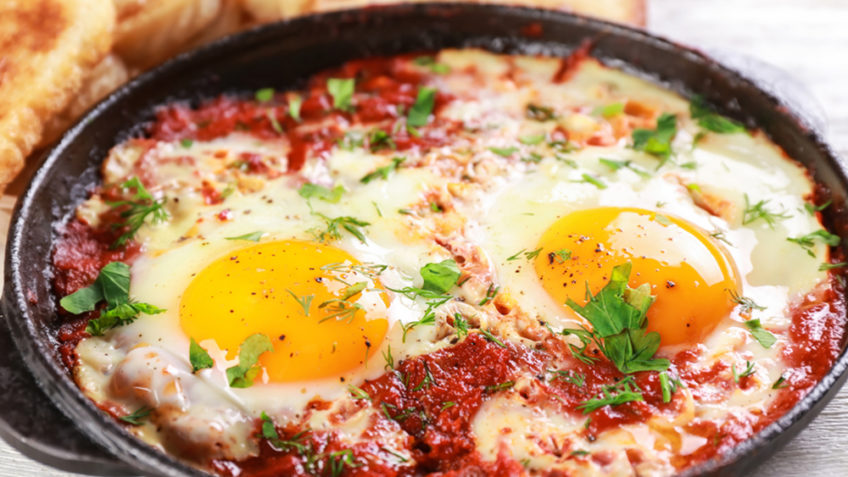

Rustic Italian eggs cooked in a spicy arrabiata tomato sauce with a parsley pesto drizzle.
A peasant dish easily made for one, two or for a crowd, this rustic meal is ideally served over creamy polenta or with
Italian bruschetta to mop up all that sauce and creamy yolks. The eggs cook in a rich seasoned tomato sauce laced
with Parmesan cheese. Served with ciabatta or polenta, it's a perfect dish for brunch. Make it for breakfast when
camping, it's quick and easy.
Ingredients
- Eggs
- Tomatoes
- Garlic
- Olive oil
- Parmiggiano reggiano
Recipe instructions
- In a large skillet heat up the olive oil and arrabbiata sauce over medium low flame. Once it starts to simmer
try making tiny wells in the sauce with a wooden spoon.
- Crack and drop the eggs in each of those wells. Allow them to gently simmer in the sauce until the egg whites
have set around the yolks, about 5 minutes. If you want the top part to steam a little as well, just cover the
pan for the last minute of cooking, making sure to keep an eye on it as eggs cook very fast.
- Remove pan from heat and season with the sea salt and red pepper flakes to taste. Just before serving drizzle
theparsley pesto all over the top and sprinkle with the toasted pine nuts and basil.
- Serve with charred pieces of garlic bruschetta or over a bed of creamy polenta.
Return to top
Return to main